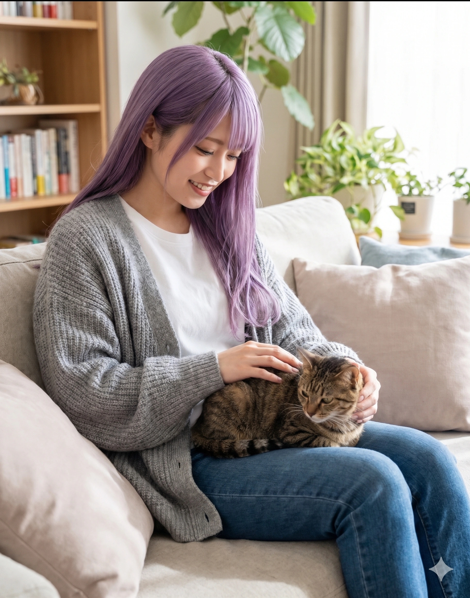
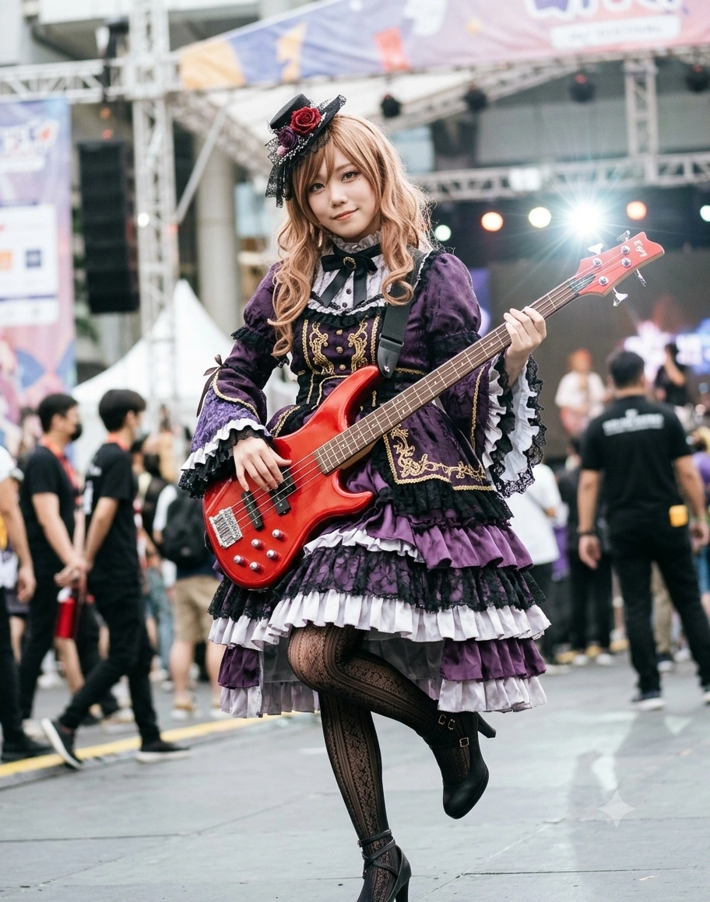
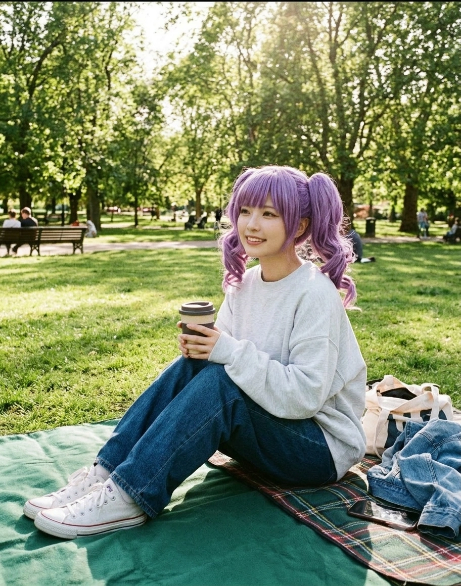

1. 개요
"목표는 정점(頂点), 오직 그것 하나뿐이야. 너희는... Roselia에, 그리고 이 도시의 음악에 전부를 걸 각오는 되어 있어? ...잠깐 천모카 씨, 지금 내 앞에서 '야옹~'이라고 한 거니?" — 우희나
"연습은 실전처럼, 실전은 연습처럼. 선도위원으로서 풍기문란은 용서할 수 없습니다. ...네? 왜 패스트푸드점에서 햄버거는 안 시키고 감자튀김만 라지(L)로 세 개 시켰냐고요?! 탄수화물 보충 효율을 고려한 것뿐입니다!!" — 허사영
"내 입으로 말하긴 그렇지만 남 돌봐주는 건 꽤 잘하는 편이야☆ 희나는 혼자 모든 걸 떠안으려 하니까 내가 가장 따뜻한 양지(陽だまり)가 되어주고 싶어! 나의 모든 것을 이 베이스와 쿠키에 담을 거야♪" — 이리사
"라, 라이브는... 긴장돼요... 하, 하지만 키보드를 칠 때랑 모두와 함께할 땐 한 걸음 앞으로 나아갈 수 있어요...! (NFO 접속 후: 아연 쨩!! 보스 브레스 3초 전이야!! 이 몸은 어둠의 대마도사 린린일지어니!! 타타타타— 분당 1,200타)" — 김인자
"응! 어둠의 힘이 콰앙(パーンッ)! 하는 느낌이 들어! 우리 미연 언니(토모에)는 우주 제일 멋있고, 희나 씨(유키나)는 세상에서 두 번째로 완전완전 멋있는 사람이야! 어... 린린! 그 '파멸' 다음 한자 단어가 뭐였지?!" — 태아연
효빈광역시와 인접 천주시·낭원군이 낳은 2001년생 동갑내기 4인방(우희나, 허사영, 이리사, 김인자)과 2003년생 천재 막내(태아연)로 결성된 프로 심포닉 고딕 록(Symphonic Gothic Rock) 밴드. 강숙미가 이끄는 『포핀☆스타』와 함께 효빈시 1세대 밴드 판의 양대 산맥(더블 주인공)을 이루고 있는 절대적 정점의 그룹이다.
밴드명인 『Roselia(로젤리아)』는 장미(Rose)와 동백(Camellia)을 합친 조어로, 꽃말은 '불가능을 가능으로 만드는 기적(푸른 장미)'이다. 멤버 5인 전원이 일본의 미디어 믹스 프로젝트 《BanG Dream!》의 인기 밴드 Roselia 캐릭터들과 이름 한자(우희나=友希那, 허사영=氷川紗夜, 김인자=白金燐子), 출생지 행정구역 및 지하철역(효빈항역, 4호선 빙천역, 7호선 리사역·리사동 825번지, 천주시 인자읍, 북구 아자동), 악기 장비, 심지어 담당 성우(아이바 아이나, 쿠도 하루카, 나카시마 유키·엔도 유리카, 시자키 카논·아케사카 사토미, 사쿠라가와 메구)의 실제 본체 기믹까지 200% 일치하는 완벽한 도플갱어들이다.
무대 위에서는 3옥타브 라(A5)를 찢어발기는 보컬, 초정밀 메트로놈 기타 태핑, 묵직한 핑거링 베이스, 고전 클래식 초절기교 신디사이저, 그리고 세계관 유이의 정통 더블 베이스(투베이스) 드럼이 결합하여 타협 없는 프로페셔널 사운드를 뿜어낸다. 그러나 무대 아래로 내려오면 왕엄마 이리사 단 한 명만 지각해도 나머지 네 명이 우유 한 컵을 엎지르고 패닉에 빠져 전멸하는 대책 없는 '생활 바보 & 중증 갭 모에 집단'이며, 멤버 전원(리사 제외)이 온라인 MMORPG 게임 『NFO(네오 판타지 온라인)』에 미쳐 밤마다 레이드를 뛰는 하드코어 게이머 집단이기도 하다.[1]현직 박효빈 효빈광역시장의 로젤리아 부동의 1순위 최애(오시)가 바로 미나토 유키나(우희나)이며, 박 시장이 구청 헬스장에서 웨이트 트레이닝(데드리프트·바벨 컬·숄더 프레스) 한계 중량을 뚫을 때 무조건 재생하는 1순위 전투 노동요가 바로 로젤리아의 『FIRE BIRD(불새)』다!
2. 멤버 및 핵심 혈맹 소개 (3D 현신)
보랏빛 6호선(#881188), 주황빛 4호선(#FF5522)·청록빛 천주 1호선(#00AABB), 분홍빛 7호선(#FF8899)을 아우르는 효빈권 광역 철도망의 살아있는 수호신들이다.
2.1. 정점의 푸른 장미 5인방 (Core 5)

남구 항동(港洞=미나토)·효빈항(港)역 출생이자 효빈 도시철도 6호선(#881188) 수석 명예 홍보대사. 본명 한자부터가 우희나(友希那=유키나)다! 연보랏빛 은발 장발(별명 '미역')에 매서운 금안의 '압(圧)'을 뿜으며 G#5~A5 고음을 꽂아 넣지만, 실제 키는 155cm로 성인 멤버 중 최단신이다. 길고양이만 보면 눈이 풀려 "야옹~" 소리를 내고, 블랙커피에 각설탕 6개를 쏟아부으며, 아이폰을 샤워기로 비누칠해 씻어 고장 내는 기계치·길치 바보지만, 유사시엔 성우(아이바 아이나)의 전직 프로레슬러 필살 서브미션 『크리스토』로 폭력배를 1초 만에 접어버리는 인간 병기다.

낭원군 빙천면(氷川面=히카와) 출생이자 4호선 빙천(氷川)역 명예 역장 겸 천주 도시철도 1호선(#00AABB) 조기착공 위원장. 로젤리아 중 나 홀로 효빈대(게이호 대응) 법학과를 수석 졸업하고 현 로스쿨 원우회장을 맡고 있는 161cm 팀 내 최장신 미녀다. 누구에게나 '성씨+씨'로 차가운 정론을 날리고 당근을 극혐하지만, 이면에는 4호선 패스트푸드점에서 감자튀김 라지(L) 3개를 몰래 밀수해 먹고 금단현상을 겪으며, NFO 일일 퀘스트를 엑셀 시간표로 30분 컷 내어 백경을 도륙한 '로얄 나이트'이자 쿠키 반죽을 mm 줄자로 재는 갭 모에의 화신이다.

중구 리사동 825번지(8월 25일 생일과 일치!) 출생이자 7호선 리사역(734번) 종신 명예 역장 겸 『이마트 효빈점(리사 마트)』 홍보대사. 우희나와 창전2동 단독주택 발코니가 마주 보는 옆집 소꿉친구(유키리사)다. 158cm·B86(D컵)의 성숙하고 육감적인 오네 갸루 미녀로, 댄스부·테니스부·편의점 알바·밴드를 동시 병행하며 엽월대 국제학부를 졸업했다. 태아연의 드럼 스틱 두 개로 즉석 뜨개질을 해내고 수제 초코 쿠키와 치쿠젠니로 모두를 먹여 살리는 세계관 최고의 보살이지만, 유령과 호러 앞에서는 문주란보다 10배 큰 비명을 지르며 기절하는 겁쟁이다.
천주시 천성구 인자읍(燐子邑=린코) 인자리에서 김백금(白金=시로카네) 씨의 딸로 태어난 고요한 피아노 성녀이자 청엽구 판주여객(주) 종신 명예 회장. 효빈대(게이호) 수석 합격을 미련 없이 포기하고 피아노 은사님을 따라 엽월대(요츠바 대응) 피아노과로 재수험 진학해 수석 졸업 후 조교로 재직 중이다. 흑발 히메컷과 고스로리 사복 속에 157cm·B91(F~G컵, 4대 거유 사천왕!)의 폭력적인 베이글 몸매를 숨기고 있다. 오프라인에선 "히얏...!" 하고 떠는 대인기피증이지만, 자택 트리플 모니터로 NFO에 접속하면 분당 1,200타의 '대마도사 RinRin☆'으로 돌변한다.

청엽구 우전동(宇田洞)·우전천(宇田川=우다가와) 출생이자 북구 아자동(牙子洞=아코) 종신 명예 동장. 『애프터글로우』 드러머 태미연(92년생, 168cm)의 11살 어린 늦둥이 친여동생이다! 미모 봉인구인 보라색 꽈배기 트윈테일에 148~150cm(언니와 20cm 차이)의 꼬마 체구지만, 뱅드림 세계관에서 유텐지 냐무와 유이하게 정통 DW 더블 베이스(투베이스) 드럼을 폭풍처럼 밟는 괴물이다. 한자 문맹이라 정식 악보는 못 읽어도 김인자가 그려준 '리듬게임 동그라미 노트 아이콘 악보'를 보면 100% 퍼펙트 연주를 해내며, "어둠의 힘이 콰앙!"을 외치다 막히면 "린린 도와줘~!"를 찾는다.
2.2. 자매·멘토 및 핵심 후원 세력 (Extended Family & Allies)


이미사 원장(88.08.25생)은 전직 갸루 출신 사회복지학 박사로, 2006년 윤대환의 난방비 횡령으로 친할머니를 잃은 아픔을 딛고 사촌 동생 이리사에게 오네 갸루 패션과 쿠키 굽기, 약자 보호 철학을 전수했다(친남동생 이민석과 조카 이준우 덕분에 원작의 '리사 남동생 증발 오류'까지 완벽 해결!). 우건호(66년생)는 상업적 타협을 거부하고 은퇴했던 전설적 록 보컬로, 딸 우희나가 동료들과 완성한 자신의 미완성곡 『LOUDER』를 듣고 눈물로 화해했다.

3. 밴드 결성 및 정점(頂点)을 향한 역사
각기 다른 상처와 고독을 안고 있던 다섯 소녀가 음악이라는 하나의 정점을 향해 부딪히고 깨지며 진짜 '우리들의 소리'를 완성해 낸 대서사시다.
3.1. 아버지의 미완성곡 『LOUDER』와 푸른 장미 5인의 결집
유년 시절 남구 항동에서 창전구 창전2동 단독주택으로 이사 온 우희나는 발코니가 마주 보이는 옆집 소녀 이리사와 함께 아버지 우건호 씨의 기타 반주에 맞춰 노래할 때가 가장 행복했다. 그러나 언더그라운드의 전설이던 아버지가 대형 음반사의 상업적 강요에 굴복하지 않고 음악계를 은퇴하며 좌절하자, 소녀 우희나는 웃음기를 지우고 "아버지가 도달하지 못했던 정점의 무대(퓨처 월드 페스티벌)... 내 노래로 아버지가 틀리지 않았다는 것을 증명하겠어"라고 맹세했다.
월삼여자고등학교에 진학해 솔로 활동의 한계를 느낀 희나는 자신과 같은 각오를 지닌 동료들을 모으기 시작했다. 천재 쌍둥이 동생(허아영)의 그림자에서 벗어나고자 스토익하게 기타를 갈고닦던 선도부장 허사영을 1호로 영입했고, 수차례 문전박대를 당하면서도 친언니 태미연의 조언으로 더블 베이스 비트를 연구해 달려든 중3 천재 드러머 태아연, 아연이의 오디션 반주를 돕다가 발탁된 소꿉친구 베이시스트 이리사, 그리고 콩쿠르 트라우마로 숨어 지내다 아연이의 손에 이끌려 와 "저, 저도 여러분과 함께 밴드를 하고 싶어요!!"라고 생애 첫 사자후를 토해낸 피아니스트 김인자(인자의 리듬게임 노트 아이콘 악보 변환 덕분에 한자·악보 문맹 아연이가 곡을 완벽히 연주해 냈다!)까지 합류하며 마침내 『로젤리아』가 탄생했다.
3.2. 2장 『Neo-Aspect』의 불협화음과 톱니바퀴 고스로리 부활극
1장에서 대형 기획사의 솔로 스카우트 유혹을 이리사의 설득으로 물리치고 아버지의 유산인 『LOUDER』를 졸업한 로젤리아에게, 최대의 파국이 찾아온 것은 『SWEET MUSIC SHOWER』 라이브 직후였다(밴드 스토리 2장 고증). 공연 반응이 기대에 못 미치자 초조해진 우희나가 옛날의 강압적인 태도로 돌아가 스파르타 연습만 강행했고, 결국 슬럼프가 온 막내 태아연에게 "그런 어리광쟁이는 이 밴드에 있을 자격이 없어! 넷이서라도 연습을 계속한다!"라는 폭언을 내뱉어 아연이가 울며 뛰쳐나갔다.
바로 그때, 평소 합주실에서 가장 소심하던 키보디스트 김인자가 떨리지만 서늘하고 단호한 목소리로 우희나를 정면에서 응시하며 일갈했다!
김인자: "희나 씨... 어째서 아연 쨩한테 그런 심한 소리를 하신 거죠...? 분명 지금의 우리는 아무리 연습을 해도 음은 맞지 않을 거예요! 이런 연주는 아무도 들으려 하지 않아요! 왜냐하면... 누구도, 모두의 소리를 듣지 않으니까요!!"
인자가 아연이를 따라 합주실을 박차고 나가면서 로젤리아는 사실상 공중분해 위기에 처했다. 그러나 인자와 아연이는 포기하는 대신 어머니의 양장점 작업실에서 사흘 밤낮으로 손가락에 피가 나도록 바늘질을 해 다섯 명이 다시 하나가 될 때 입을 새로운 제복(Neo-Aspect 의상)을 제작했고, 허사영과 이리사의 진심 어린 설득으로 잘못을 깨달은 우희나가 돌아왔을 때 인자는 희나의 가슴팍에 '다시 맞물려 돌아가는 금빛 시계 톱니바퀴 장식'을 달아주며 눈물의 부활 라이브를 완성했다.
3.3. 『가을비에 우산을』 & 『Growing Up Sisters!』: 두 자매의 구원 서사
로젤리아의 성장을 이끈 또 다른 핵심 축은 기타리스트 허사영과 드러머 태아연의 '자매 갈등 극복 서사'다. 사영은 자신이 시작한 기타마저 단숨에 따라잡아 버린 5분 늦은 쌍둥이 동생 허아영(히나)에 대한 극심한 열등감으로 괴로워했다. 그러던 가을날(『가을비에 우산을』), 사영은 아침 일찍 스튜디오 앞에서 만난 아연이의 11살 위 큰언니 태미연으로부터 "솔직히 드럼 재능 자체는 나보다 아연이가 더 천재적일지도 몰라. 하지만 아연이가 나를 따르는 건 순수하게 기뻐. 왜냐하면 아연이는 내 단 하나뿐인 동생이니까"라는 어른스러운 조언을 듣고 깊은 울림을 받았다.
그날 저녁 쏟아지는 가을비 속에서 우산을 들고 스튜디오 앞까지 마중 나온 동생 아영이를 본 사영은 마침내 눈물을 터뜨리며 열등감을 고백했고, 평생 화낸 적 없던 아영이가 처음으로 얼굴을 일그러뜨리며 "언니는 거짓말쟁이야!! 난 언니의 기타 소리를 듣고 기타를 시작했단 말이야!! 약속을 깨고 기타를 그만두려는 언니 같은 건 나야말로 엄청 싫다고!!"라고 외치자 동생의 진심을 깨달은 사영이 명곡 『Determination Symphony』를 탄생시켰다. 이후 사영은 반대로 언니 미연이의 그늘에 갇혀 슬럼프에 빠진 태아연(『Growing Up Sisters!』)에게 "미연 씨의 등 뒤에만 숨지 말고 당신의 더블 베이스 페달로 옆에 당당히 서세요"라고 조언을 돌려주어 우전천 락 페스티벌 자매 드럼 배틀을 성사시켰다.
3.4. 엽월대 3인(김인자의 게이호 포기 재수험!) vs 나 홀로 효빈대 법대(허사영)
언니 라인 4인방(2001년생)의 고등학교 3학년 대입 시즌에는 원작 시즌 3(『My first step』 등)의 대학 진학 구도가 토씨 하나 틀리지 않고 재현되었다. 공부에 흥미가 없어 영어 과락 위기였던 우희나는 소꿉친구 이리사의 밤샘 족집게 과외와 실기 만점으로 엽월대학교(요츠바 여대 대응) 음악학과 작곡코스에, 이리사는 엽월대 국제학부에 나란히 합격했다.
반면 전교 최상위권 우등생이던 허사영과 김인자는 나란히 지역 최고 국립 명문대인 효빈대학교(게이호 여대 대응) 법학대학과 인문대학에 수석 장학생으로 최초 합격했다! 그런데 그해 겨울, 인자는 자신이 어릴 적 피아노를 시작하게 만들었던 동경의 피아니스트 은사님이 효빈대가 아닌 엽월대 음악학과 강사로 초빙되었다는 소식을 듣게 되었다. 인자는 "도망치지 않고 제 마음이 가리키는 소리를 향해 한 걸음 더 나아가고 싶어요!"라며 이미 합격한 명문 효빈대 등록을 미련 없이 포기하고, 한 달간 손톱이 갈라지도록 실기를 준비해 엽월대 피아노 코스에 재수험으로 응시하여 전체 수석 합격하는 기염을 토했다!(2년 뒤 막내 태아연도 엽월대 실용음악과 22학번으로 합류했다.)
결국 로젤리아 중 허사영 혼자만 효빈대생이 되었으나, 대신 쌍둥이 동생 허아영(효빈대 인류학·천문학 전공)과 같은 캠퍼스에 다니게 되었다. 사영이는 동생 아영이의 천문동아리가 '별이 반짝반짝해서 룽♪ 했다' 같은 4차원 활동 일지 때문에 폐부 위기에 처하자, 일주일간 밤을 새워 100페이지 분량의 학술 관측 보고서를 대신 작성해 폐부를 막아내고 옥상 천문대에서 "어두운 푸른 별 카스토르(사요)와 밝은 노란 별 폴룩스(히나)가 나란히 있어야 비로소 쌍둥이자리가 완성된다"는 명연설(『쌍둥이 별의 앙상블』)을 남겨 캠퍼스의 전설이 되었다.[2]실제 천문학 팩트상 겉보기 등급은 폴룩스(동생 히나)가 더 밝아 보이지만, 별 자체의 실제 밝기인 절대등급은 카스토르 Aa(언니 사요)가 더 높다는 점까지 현실의 사요·히나 캐릭터 인기도와 소름 돋게 일치한다!
4. 지명·철도 역세권 성골 매칭과 내부 대환장 갭 모에
4.1. 항동(효빈항)·빙천역·리사역·인자읍·아자동 5대 성지 완벽 고증
효빈광역시와 덕빈북도 일대의 행정구역 및 철도역은 Roselia 5인방을 위해 설계된 듯한 우주적 싱크로율을 자랑한다.
- 우희나 (미나토 유키나 / 湊 友希那): 남구 항동(港洞 = 미나토) · 효빈항(港)역 종신 명예 역장 + 보라색 효빈 도시철도 6호선(#881188) 6015편성 래핑열차! 본명 한자까지 友希那로 100% 동일하다.
- 허사영 (히카와 사요 / 氷川 紗夜): 덕빈북도 낭원군 빙천면(氷川面 = 히카와) 빙천리 출생 + 4호선 빙천(氷川)역(404번) 명예 역장 + 천주 1호선(#00AABB) 추진위원장!
- 이리사 (이마이 리사 / 今井 リサ): 중구 리사동 825번지(생일 8월 25일!) 출생 + 7호선 리사역(734번) 명예 역장 + 1998년 8월 25일에 개점한 『이마트 효빈점(리사 마트)』!
- 김인자 (시로카네 린코 / 白金 燐子): 천주시 천성구 인자읍(燐子邑 = 린코) 인자리에서 부친 김백금(金白金 = 시로카네) 씨의 딸로 출생! (인자읍 중앙로는 전국 피아노 학원 밀집도 1위다.)
- 태아연 (우다가와 아코 / 宇田川 あこ): 청엽구 우전동(宇田洞)·우전천(宇田川 = 우다가와) 출생 + 북구 채산동 산하 법정동 아자동(牙子洞 = 아자/亞子) 종신 명예 동장!
4.2. 『Don't Leave me, Lisa!』: 왕엄마 이리사 지각 날의 핫 밀크 전멸 대참사
외부에서는 범접할 수 없는 다크 카리스마 프로 밴드로 보이지만, 실생활에서 정신적 지주(왕엄마)인 이리사 단 한 명이 자리를 비우면 나머지 4명이 얼마나 심각한 생활 무능력자들로 전락하는지 증명된 사건이다(제10회 이벤트 고증).
어느 날 리사가 편의점 알바 동료인 천모카의 감기 대타를 뛰느라 합주에 1시간 지각을 하게 되었다. 리사가 오지 않자 합주실에서는 1) 리사 걱정에 어수선하게 걷던 우희나가 기타 케이블에 걸려 넘어지고, 2) 그 충격으로 김인자의 따뜻한 핫 밀크 머그잔이 엎어져 앰프와 태아연의 아끼는 고스펑크 옷에 우유가 콸콸 쏟아졌으며, 3) 당황한 인자가 가방을 뒤졌으나 물티슈는 빈 봉투뿐이고, 4) 허사영은 "단백질 응고 전에 냉수 세척해야 합니다! 근데 화장실 수압 밸브가 어디 있죠?!"라며 우왕좌왕하고, 5) 우희나는 물티슈 대신 블랙커피용 각설탕 통을 들고 와 어쩔 줄 몰라 하는 대참사가 터졌다!
헐레벌떡 도착한 이리사가 가방에서 대용량 물티슈, 얼룩 제거제, 수건, 각설탕, 수제 쿠키를 마술처럼 꺼내 단 3분 만에 상황을 완벽 수습하자, 네 명 전원이 리사의 허리를 부둥켜안고 "리사 씨(이마이 씨)... 제발 다신 지각하지 마세요, 리사 씨 없으면 우린 우유 한 컵에도 전멸해요!!"라며 통곡했다.
4.3. 고양이 금단현상 '별머리 강숙미 납치 사건'과 4호선 감자튀김 밀수 루트
밴드 내 양대 얼음 여왕인 보컬 우희나와 기타리스트 허사영의 이미지를 산산조각 내는 치명적인 약점들이다.
- 우희나의 길고양이 포획 실패와 '별머리 강숙미' 보쌈 납치 대소동 (걸파☆피코 21화): 지리 시간에 '라니냐(La Niña)' 현상의 '냐' 글자만 듣고도 고양이 생각에 빠져 미소 짓는 중증 고양이 바보(냥키나) 우희나가, 어느 날 효빈항역 뒷골목에서 버려진 아기 길고양이 5마리를 발견하고 무릎을 꿇은 채 "야옹~ 우희나 언니가 츄르 줄게 냐앙~♡"이라며 애교를 부렸다. 그러나 희나의 매서운 삼백안에서 뿜어져 나오는 무언의 '압(圧)'에 기겁한 고양이들이 다 도망쳐 버리자, 고양이 금단현상으로 눈이 뒤집힌 희나는 마침 골목을 지나가던 『포핀☆스타』 보컬 강숙미의 양쪽 뿔버섯 별머리를 '거대 고양이 귀'로 착각하여 보쌈하듯 번쩍 들쳐 업고 합주실로 납치해 왔다! 소파에 숙미를 앉혀놓고 머리 뿔을 쓰다듬으며 "오늘부터 새로 들인 길고양이야. 귀 모양이 훌륭해"라고 만족해하는 희나를 보며 이리사와 허사영이 뒷목을 잡았다.
- 허사영의 4호선 '빙천역~사야역 감자튀김 라지(L) 밀수 루트'와 금단현상 (피코 24화): 평소 정크푸드를 경멸하는 척하는 선도부장 허사영은 사실 맥도날드 감자튀김에 영혼을 판 중증 감튀 처돌이다. 팬들 사이에서는 사영이가 4호선 빙천(氷川=히카와)역(404번) 앞 패스트푸드 거리('빙천 감튀 로드')에서 감자튀김 라지 3개를 산 뒤, 두 정거장 옆인 사야(四野=사요)역(406번)으로 넘어가 폭풍 흡입한다는 밀수 루트가 정설로 통한다. 한 번은 여름 라이브 식단 관리로 2주간 감자튀김을 끊었다가 합주실에서 노란 기타 피크와 이리사의 노란 머리핀이 전부 감자튀김으로 보이는 심각한 금단 환각 증세를 겪었는데, 조기 퇴근 후 빙천역 계단에서 마주친 쌍둥이 동생 허아영이 내민 따끈한 감자튀김 라지 봉투의 유혹에 무너져 길거리에서 동생과 나란히 감자튀김을 입에 넣고 황홀해하는 모습이 목격되었다.
4.4. 『NFO(네오 판타지 온라인)』 분당 1,200타 대마도사 린린과 해킹(?) 소동
김인자(위저드 RinRin)와 태아연(네크로맨서 Ako)은 팀워크를 다진다며 우희나(바드), 허사영(나이트), 이리사(힐러)를 유류동 인자네 방(스타인웨이 그랜드 피아노 옆에 수랭식 트리플 모니터 PC가 놓인 부잣집 방!)으로 초대해 MMORPG 『NFO』 길드를 창설했다. 튜토리얼이 시작되자마자 오프라인에선 세 마디도 못 하던 인자가 눈빛이 보랏빛으로 번뜩이며 분당 1,200타의 타자 속도와 속사포 보이스로 1분간 500단어의 공략 오더를 쏟아내 멤버들을 경악시켰다! 더 무서운 것은 처음엔 관심 없는 척하던 허사영이 '일일 퀘스트 30분 컷 엑셀 시간표'를 짜서 플레이하더니 레이드 보스 백경 재료를 아연이보다 2배 빠르게 모아 전 서버 상위 1% 『로얄 나이트』로 전직하고 오프라인 방탈출 보상인 전설의 기사 방패까지 독식해 아연이를 오열하게 만들었다는 점이다.
한 번은 주말 오후 NFO 광장에서 허사영의 로얄 나이트 캐릭터가 갑자기 고양이 입(ω) 이모티콘을 띄우며 "야호~☆ 아연아 인자야 안녕~! 사영이 누나가 쿠키 버프 구워왔어~♪ (≧∇≦)/"라며 갸루 춤을 추고, 태아연의 부계정이 "...시끄러워. 정점의 던전으로 간다"라며 엄근진 포스를 뿜는 괴현상(걸파☆피코 곱빼기 15화)이 발생해 인자와 아연이가 "사영 언니 계정이 해킹당했어!!"라며 기겁했는데, 알고 보니 사영이네 집에 놀러 온 이리사와 우희나가 사영이가 홍차를 타러 간 사이 몰래 대리 로그인을 해서 벌어진 참사였다.
4.5. 폭우 속 이리사 '강제 바밤보·털복대 패션쇼'와 마블 굿즈샵 고장 난 레코드판
- 폭우에 젖은 이리사의 '강제 1인 혼종 패션쇼' (피코 곱빼기 3화): 장대비에 옷이 젖은 이리사에게 마른 옷을 찾아주겠다던 멤버 4명이 갑자기 인형 옷 입히기 놀이에 불이 붙어, 인자는 아이돌 프릴 드레스를, 우희나는 사심 200%의 검은 고양이 귀·꼬리·발바닥 장갑 세트를("...완벽해. 역시 리사야"), 사영이는 복부 보온 효율이라며 이아리네 할머니표 황토색 털 복대(하라마키)를, 아연이는 천모카가 두고 간 고대 정령 '바밤보 님' 탈과 짚단 치마를 동시에 입혀놓아 오네 갸루 이리사를 절규하게 만들었다.
- 마블(Marvel) 팝업스토어 서프라이즈 역몰카 사건 (성우 실화 고증): 마블 히어로 영화 덕후인 우희나가 다른 멤버들은 바쁠 거라 지레짐작해 이리사만 데리고 동곡동 마블 굿즈샵에 갔다. 리사의 연락을 받고 미리 매장에 숨어 있던 사영·인자·아연 세 사람이 희나 바로 1m 등 뒤에서 확성기급 성량으로 "와아~ 이 아이언맨 티셔츠 우리 보컬 우희나 언니(아이아이)가 완전 좋아할 것 같아!!"라고 힌트를 던졌으나, 희나는 '세상엔 우리랑 이름이 똑같은 마블 팬도 있네'라고 태연하게 넘기며 구경만 계속했다(...). 결국 사영이가 어깨를 치자 그제야 발견하고 "에?! 왜 있어?!"라며 자빠질 뻔했고, 저녁 나베 식당에서 냄비가 다 끓을 때까지 10분마다 멍하니 "...에? 근데 너희들 진짜 왜 여기 있어?"를 고장 난 레코드판처럼 무한 반복했다.
5. 2025.12.24 고려대 화정체육관 완전체 내한 대서사시 & 참교육 일화
5.1. 2025 크리스마스이브 『Neuweltfahrt in Seoul』: 불새와 '미역' 그리고 한도리 섭종 눈물의 MC
2025년 12월 24일 크리스마스이브, 서울 고려대학교 화정체육관에서 열린 『Roselia ASIA TOUR 「Neuweltfahrt」 in Seoul』 완전체 단독 내한 공연은 실제 Roselia 성우 5인방과 효빈시 로젤리아 5인방, 그리고 성덕 박효빈 시장의 운명이 하나로 교차한 역사적인 성전이(聖戰)었다!
당시 티켓값 13만 원의 압박에 잠시 망설이다가 이어폰에서 흘러나온 『FIRE BIRD(불새)』의 고음을 듣자마자 "미쳤나? 이걸 안 듣는다고?!"라며 연가(휴가)를 질러 상경한 박효빈은, 홍대입구역 광고판과 전시회를 돌고 안암동 고려대 '헐떡고개'를 넘어 오후 4시 반경 화정체육관 입구에 도착했다. 그리고 그 광장에서 김인자가 한 땀 한 땀 제작한 Neuweltfahrt 고스로리 제복을 완벽하게 맞춰 입고 서 있던 '역대급 고퀄리티 유키나·린코·사요·리사·아코 코스어 5인방(바로 우희나 일행 본인들!)'을 발견하고 정중하게 인증샷 촬영을 요청해 전설의 투샷을 남겼다!(이후 스탠딩 대기열을 못 찾아 헤매던 박효빈을 태아연과 NFO 길드원 방붕이들이 친절하게 안내해 합류시켰다.)
입장 후 4시간이 넘는 스탠딩 강행군으로 허리와 무릎이 부서질 듯한 고통이 몰려왔으나, 본 공연이 시작되자마자 무대 위 아이바 아이나(아이아이)가 단 한 번의 삑사리도 없이 스튜디오 음원을 씹어먹는 괴물 같은 성량을 폭발시켰고, 쿠도 하루카(사요), 나카시마 유키(리사), 시자키 카논(린코), 사쿠라가와 메구(아코)가 애니메이션 속 원작 포즈와 표정을 오차율 0%로 싱크로해 내며 모든 고통을 증발시켰다(공연 전 우희나가 매서운 삼백안의 '압(圧)'으로 가짜 믹스콜인 '이엣타이가' 빌런들을 사전 제압해 클린한 정통 떼창만을 완성시켰다!).
그리고 이날 공연의 정점을 찍은 것은 후반부 드러머 사쿠라가와 메구(메구치)의 눈물 어린 한국어 MC 타임이었다.
사쿠라가와 메구 (아코 역): (보라색·진분홍색 펜라이트로 가득 찬 객석을 보며 울먹이는 목소리로) "여러분... 사실 한국 게임 서버(한도리)가 서비스 종료되어서... 혹시 한국 팬분들이 뱅드림을 잊었을까 봐, 우리 로젤리아를 잊었을까 봐... 정말로 많이 걱정했어요...! 그런데 이렇게 많이 찾아와 주시고 잊지 않고 사랑해 주셔서 정말 고마워요!!"
태아연 & 김인자 & 박효빈 & 전 관객: (서로를 부둥켜안고 폭풍 눈물을 흘리는 동시에, 0.1초 뒤 전원의 머릿속에 일치단결된 분노가 결집됨) 『크아아악―!! 우리 메구치 누나를 걱정하게 만든 한도리 섭종의 원흉 카카오게임즈 저 천하의 개쌍놈들은 진짜 물리적으로 쳐패야 할 놈들이다아아!! 어둠의 심연 불구덩이에 영구 봉인해 버려야 해!!』
초기 예매 부진 우려를 비웃듯 남녀 성비 6:4의 전석 매진급 열기와 앵콜 『FIRE BIRD』의 화염 속에 공연이 끝난 직후, 감동에 젖은 박효빈이 디시인사이드 뱅드림 갤러리에 13만 원이 단 1원도 아깝지 않은 명문 직관 후기를 작성해 개념글에 직행했는데, 그 진지한 후기 마지막 줄에 달린 불멸의 한 줄 요약이 바로 "그리고 오늘의 웃음벨은 미역(열창할 때마다 얼굴에 휘감기고 찰랑거리던 유키나·아이아이·우희나의 연보랏빛 은회색 헤어스타일 밈)이었다 ㅋㅋㅋㅋ"였다! 이 념글에 김인자가 NFO 부계정으로 개추를 눌렀고, 글을 읽은 우희나는 자기 머리카락을 만지작거리며 "...미역이라니. 미네랄이 풍부한 바다의 식물과 내 머리카락을 비유하다니 나쁘지 않은 표현이네(진지)"라고 반응해 이리사를 빵 터지게 만들었다.[3]앞서 우희나는 2022년 10월 부천국제애니메이션페스티벌(BIAF) 내한 당시 공항철도 홍대입구역 4번 출구에 걸린 미나토 유키나 생일 광고판 앞에서 실제 성우 아이바 아이나와 우연히 조우해 이리사의 쿠키와 '쾌변 요구르트'를 건네며 인증샷을 찍은 인연도 가지고 있다!
5.2. 효빈항역 광장 혐오 폭력배 난입과 '전직 프로레슬러' 필살 서브미션 『크리스토』 1초 제압
1호선·7호선·빈효선이 교차하는 효빈항(港)역 광장에서 주말 자선 라이브가 열렸을 때의 일이다. 무대 아래에서 소심한 김인자가 악기 세팅을 하던 중, 만취한 반(反)서브컬처 폭력배(윤재훈 추종 패거리)가 난입해 인자의 손목을 거칠게 낚아채려 했다.
스태프들이 제지하기도 전인 단 0.3초의 순간, 마이크를 내려놓은 155cm의 보컬 우희나가 무대 위에서 사자처럼 도약했다! 그 순간 희나의 몸에 담당 성우 아이바 아이나의 전직인 여자 프로레슬러 '오사카발 폭주기관차 하리마 유우키'의 투혼이 100% 강림했다! 희나는 공중에서 폭력배의 목에 양다리를 걸어 회전하는 고난도 헤드 시저스를 작렬한 뒤, 그대로 상대의 오른팔을 등 뒤로 꺾어 잠가버리는 아이바 아이나의 실제 프로레슬링 필살 서브미션 기술 『크리스토(Christo)』와 『코브라』를 연속으로 꽂아 넣어 180cm 거구의 폭력배를 단 1초 만에 아스팔트 바닥에 꽂고 탭아웃(항복)을 받아냈다!!
머리칼 한 올 흐트러지지 않은 채 "...내 동료와 무대에 손대려 한 대가야. 난 힘자랑하는 건 좋아하지 않으니까 경찰이 올 때까지 조용히 그 각도로 반성하고 있어"라고 차갑게 내려다보는 희나의 모습에 객석의 팬들은 "샌드스타를 맞기 전의 아이아이(우희나)가 강림하셨다!! 목표는 정점(물리)이다!!"라며 열광했다.
5.3. 2025년 7호선 리사역 락카 테러범 검거와 '피규어 요양원 쿠키 자매 어벤져스' 출격
세상 누구에게나 다정한 '갸루 보살' 이리사가 유일하게 미소를 지우고 극대노하는 순간은 자신의 가족(2006년 윤대환의 난방비 예산 횡령으로 한랭 질환 사망하신 친할머니, 그리고 사촌 언니 이미사 사회서비스원장)과 동료를 건드릴 때다.
극우 단체 대표 이차야가 사촌 언니 이미사 원장이 운영하는 시립 노인요양원에 난입해 80세 참전용사 할아버지의 치매 예방용 건담 프라모델을 부수려 했을 때, 봉사활동을 와 있던 이리사와 이미사 원장 자매는 동시에 영하 200도의 눈빛을 켜고 "한 발짝만 더 다가오면 제 베이스 하드케이스 모서리로 정당방위가 뭔지 보여드릴게요"라며 참전용사 할아버지의 티타늄 지팡이와 함께 이차야를 쫓아내 유튜브 조회수 300만 뷰의 『피규어 요양원 쿠키 자매 어벤져스』 신화를 썼다.
또한 2025년 HAF 직후 윤재훈 추종자 A씨(02년생)가 창전역에서 마서령·조류희에게 쫓겨난 뒤 중구 7호선 리사역(734번)으로 도망쳐 와 승강장 벽면에 빨간 락카를 뿌리며 "이마이 리사! 잘난 척하는 년들이 제일 싫어!"라고 발악했을 때, 마침 옆 이마트 효빈점에서 쿠키 재료를 사서 내려오던 이리사 본인이 애니메이션 3기 6화 때의 그 서늘한 진심 분노 표정으로 나타나 "...잘난 척이 아니라, 공공기물에 락카질을 하지 않는 건 초등학생도 아는 기본 상식이란다. 정말 최악이네"라고 일갈하며 잠복 경찰에게 현행범 체포시키고 직접 역 벽면을 깨끗이 닦아냈다.
5.4. 4호선 빙천역 무단횡단 유세단 3분 컷 퇴거와 NFO 트롤 길드 융단폭격
효빈시 명예 선도부장이자 4호선 빙천역 명예 역장인 허사영은 매주 금요일 선도 완장을 차고 순찰을 돈다. 어느 날 윤재훈의 극우 청년 조직원들이 빙천역 사거리에서 무단횡단을 하며 불법 혐오 전단지를 살포하다가, 바람에 날린 전단지가 마침 사영이가 들고 있던 테이크아웃 감자튀김 봉투를 쳐서 감자튀김 두 개를 바닥에 떨어뜨리는 대역죄(?)를 저질렀다! 연두색 눈동자가 영하 100도로 얼어붙은 사영이가 호루라기를 불며 도로교통법 제10조·경범죄처벌법 제3조·옥외광고물법 위반 조항을 토씨 하나 안 틀리고 읊으며 채증하자, 쫄아버린 조직원들은 무릎을 꿇고 전단지 500장을 다 주워 담은 뒤 맥도날드 감자튀김 라지 5개를 새로 사다 바치고 도망쳤다.
한편 온라인 게임 『NFO』에서는 윤재훈 추종자들과 분탕종자들이 만든 악질 트롤 길드가 초보 유저(닉네임 '돌멩이펭귄'으로 첫 접속한 고다솔 등)의 사냥터를 통제하자, 길드 마스터 '대마도사 RinRin(김인자)'이 김시연·이주미의 보안 좌표 지원과 로얄 나이트 허사영의 어그로 몰이를 받아 분당 1,200타의 3중 영창 캔슬 광역 심연 마법으로 트롤 길드원 50명을 단 3분 만에 전멸·영구 추방시키고 시연이가 현실 모욕죄 고소장을 꽂아 넣었다.
5.5. 6호선 6015편성 유키나 래핑열차, 리사 마트(8월 25일 개점), 판주여객 독서 버스
- 효빈 도시철도 6호선 6000호대 『6015편성 유키나 정점 래핑열차』: 과거 윤대환이 시청 지하 소각장에서 도면을 불태웠던 보라색 6호선(#881188)이 민주당 시정에서 부활한 뒤, 박효빈 시장과 효빈교통공사는 6015편성 전체를 보라색 장미와 우희나 일러스트로 래핑했다. 차내에서 우희나의 목소리로 "이 열차에 탄 이상 중도 하차라는 타협은 허락할 수 없어. 이번 역은 효빈시 대중교통 수익률 1위의 『정점(頂点)』, 중수·시청역입니다"라는 안내방송이 나오자 실제 6호선이 교통공사 영업흑자 부동의 1위를 달성했다!
- 중구 리사동 825번지 『이마트 효빈점(리사 마트)』 8월 25일 오픈런 대란: 주소가 리사동 825번지이고 개점일이 1998년 8월 25일(이리사 생일과 100% 일치!)인 이마트 효빈점은 1층에 『Lisa's Cookie』 전용 매대를 두고 가전 코너 옆에서 느닷없이 ESP 베이스 스트링을 판다. 매년 8월 25일 매장 전체에 『FIRE BIRD』 오케스트라 버전이 울려 퍼지는 가운데 시식 코너 아주머니가 "이 마트에 오신 이상 시식에 타협은 없습니다! 목표는 완판, 그것 하나뿐이에요!!"라고 외치며, 당일 이리사와 우희나, 이미사 원장이 직접 쿠키를 나눠주면 일일 매출 전국 1위를 찍는다.
- 청엽구 『판주여객』 고딕 독서 버스와 우전동 이케아·스타필드 부활: NFO 부길드장인 고수현 사장의 판주여객 마을버스는 김인자 명예 회장의 자문으로 보라색 장미 시트와 작은 문학 도서관 선반, 로젤리아 오르골 BGM이 흐르는 '독서 버스'로 운행 중이다. 또한 태아연·태미연 자매의 고향인 청엽구 우전동은 구 이마트 우전점 폐점의 아픔을 딛고 박효빈 시장과 신수인 의원이 『이케아 효빈점』과 『스타필드 효빈』, 그리고 『1·2호선 우전역 지하 무료 방음 드럼 연습실』(경고문: "시설 파손 시 3대가 멸할 정도로 배상 청구함")을 깔아주어 락의 성지로 완벽히 부활했다.
6. 든든한 뒷배 및 타 세대·밴드와의 연대 (세계관 대통합)
6.1. 박효빈 시장의 3대 중량 노동요 『FIRE BIRD』와 효빈항 개명 미수 사건
박효빈 효빈광역시장의 로젤리아 사랑은 시정 곳곳에 스며들어 있다. 구청 헬스장에서 데드리프트와 바벨 컬(33kg), 숄더 프레스(50kg) 한계 중량을 칠 때마다 『FIRE BIRD』의 "라라라라~ 불타올라라(Burn up)!!" 구간에서 마지막 1회를 뽑아 올리며, 시장실 한구석에는 허사영(사요) 1/1 등신대를 세워두고 업무 중 농땡이를 치거나 몰래 햄버거를 먹을 때마다 등신대의 싸늘한 눈빛을 보며 자세를 고쳐 앉는다(허사영 본인이 시청 행사에서 "시장님, 감자튀김 섭취 시 나트륨 배출을 위해 수분도 병행하십시오"라고 직접 훈육해 박 시장을 감격시켰다!).
심지어 박 시장은 취임 초기 성덕심이 과열된 나머지 시의회 간담회에서 "효빈항(港)을 국제화 시대에 맞춰 일본어 독음 병기인 『미나토(湊)항』으로 개명하고 항만 크레인을 전부 보라색으로 도색하면 어떨까요?"라고 던졌다가 비서실장에게 십자포화를 맞고 빛의 속도로 철회한 흑역사가 있는데, 우희나는 "...시장님, 항구 이름을 바꾸는 건 오버야. 대신 효빈항역 광장 라이브는 허가해 줘"라며 쿨하게 화답했다.
6.2. 효빈대 로스쿨 3대 호랑이 풍기위원장(이아리×허사영×석다연)과 고다솔의 감튀 반창고
효빈대학교 법학계열(법학과 및 로스쿨)에는 캠퍼스의 모든 무임승차와 불법을 물리적으로 쓸어버린 '전설의 3대 호랑이 풍기위원장 계보'가 존재한다. 바로 09학번 수석인 이아리 수석공소관(검사), 20학번 수석이자 현 로스쿨 원우회장인 허사영, 그리고 로스쿨 직속 후배 군기반장 석다연(쿠로사와 다이아 본체)이다! 세 사람이 모의법정 심사위원석에 나란히 앉아 조별 과제 무임승차 학우에게 "뿌뿌ㅡ 데스와!!", "기본 의무를 해태하는 자는 법조인이 될 자격이 없습니다"라며 F학점 제적 건의서에 연대 서명할 때의 위압감은 그 김시연조차 90도 배꼽 인사로 길을 비키게 만든다.
반면 그런 얼음 선도부장 허사영이 심야 도서관 공부 후 4호선 빙천역 맥도날드에서 몰래 감자튀김 라지 2개를 사서 코트 주머니에 숨겨 나오다가 후배 고다솔·시인하와 마주쳐 당황했을 때, 다솔이가 사영의 기타 굳은살 박인 손가락에 귀여운 '감자튀김 모양 반창고'를 붙여주며 "밤하늘의 별들도 배가 고프면 구름 과자를 먹는대요... 선배님이 감자튀김을 드시는 건 참 다정하고 인간적인 모습이에요..."라고 위로해 사영의 마음을 사르르 녹이고 벤치에서 셋이 나란히 감자튀김을 나눠 먹은 힐링 일화도 있다.
6.3. 우희나×문주란 항아리탕·투표 들통 & 이리사×천모카 편의점 알바 동맹
로젤리아와 『애프터글로우』는 세계관 최고의 라이벌이자 절친 밴드다.
- 우희나 × 문주란(유키란)의 1표 투표 들통과 항아리탕 투샷: 1:1 라이브 대결 이후 서로를 깊이 인정한 우희나와 문주란(미타케 란 본체). RAS와의 대결 투표 때 주란이가 로젤리아에 1표를 던진 증거 사진을 장난꾸러기 천모카가 우희나 코앞에 폭로해 버리자, 주란이가 브릿지 머리색보다 시뻘게진 얼굴로 "당신들이 지면 내가 이길 상대가 사라지니까 투표한 것뿐이에요!!"라며 츤데레 발악을 했고 희나는 옅은 미소로 화답했다(온천 합숙 때는 노천 항아리탕 두 개에 나란히 한 명씩 들어가 진지하게 음악 토론을 나누었다). 단, 모카가 왕방울만 한 고양이 얼굴 티셔츠를 입고 나타나 "미냐~토 씨, 야옹~"이라고 약 올리면 희나의 평정심이 단숨에 무너진다.
- 이리사 × 천모카(모카리사)의 편의점 알바 동맹과 『아리사의 나쁘지 않은 휴일』: 청엽구 편의점 알바 콤비인 이리사와 천모카는 각자 '자존심 세고 속마음 말 못 하는 고집불통 보컬 소꿉친구(우희나 / 문주란)'를 케어하는 고충을 나누는 사이다. 모카가 병실에서 도망치려는 주란이를 붙잡고 진성 팩폭을 날릴 수 있었던 것도 리사가 "소꿉친구가 잘못된 길로 가지 않게 따끔하게 붙잡아주는 것도 절친의 역할이야!"라고 조언해 준 덕분이었다. 또한 리사는 낯가림 끝판왕 4인방(이아리·우서림·문주란·허마리)을 한자리에 모아 식물(분재·화도)과 카오루 선배·초콜릿이라는 공통분모로 10분 만에 절친으로 만들어버리는 주선 성공률 100%의 기적을 선보였다.
6.4. 길고양이 감라나 말차 쿠키 포섭 미수 사건과 나소연의 치쿠젠니 도시락
후배 밴드 『미아(MyGO!!!!!)』와의 연습 참관 날, 우희나는 구석 앰프 위에서 웅크려 자다 깨어 말차 파르페를 핥아 먹는 은발 오드아이 기타리스트 감라나를 보자마자 눈이 황금빛으로 번쩍였다. 행동거지가 인간이 아니라 100% 진짜 길고양이(노라네코) 그 자체였기 때문이다! 홀린 듯이 다가간 희나가 무릎을 꿇고 "...오드아이의 은빛 길고양이... 이리 오렴. 우희나 언니네 집에 가면 따뜻한 코타츠와 리사가 만든 말차 쿠키가 산더미처럼 있단다... 야옹~"이라며 말차 초콜릿으로 납치(?)를 시도해 시인하가 기겁하며 말려야 했다(그날 이후 라나는 배고프면 창전2동 희나·리사네 집 마당으로 찾아가 말차 쿠키를 얻어먹는 공식 식객이 되었다).
한편 엽월대 캠퍼스에서는 같은 대학 관현악과 후배인 베이시스트 나소연이 과거 CRYCHIC 해체 상처와 미아 밴드 초기 갈등으로 점심을 거르며 한숨 쉬고 있을 때, 대선배 이리사가 옆에 앉아 직접 만든 일본 가정식 닭고기 조림(치쿠젠니)과 오이 식초 무침(스노모노) 2단 도시락을 건네며 "베이스는 원래 멜로디와 리듬 사이에서 다리를 놓느라 제일 마음고생이 많은 포지션이잖아. 혼자 다 짊어지려 하지 말고 소연 쨩의 까칠한 본심까지 애들한테 솔직하게 부딪혀 봐☆"라고 토닥여주어 소연의 눈시울을 적셨다.
6.5. 학생회장 삼자대면(이아리·김인자·조류희 거유 회동)과 유채나 당근 괴식 극혐 탈주
- 전·현직 명문 여고 학생회장 삼자대면 (세계관 4대 거유 3인 집결!): 매년 10월 사능동 『유성당』 인근 전통 감미처에서는 학생회 대선배 이아리 검사(90년생, B93 G컵), 월삼여고 제34대 학생회장 출신 김인자(01년생, B91 F~G컵), 그리고 직속 후배 학생회장 조류희(03년생, B94 G~H컵)가 모여 밤안미츠와 단팥죽, 핫 밀크를 나누는 역사적인 회동을 갖는다(어린 시절 콩쿠르 트라우마로 피아노를 그만두려던 인자를 붙잡아준 소꿉친구가 바로 조류희였으며, 두 사람은 창전 시사이드 콘서트홀에서 10년 만의 눈물의 피아노·5현 바이올린 듀오 리사이틀을 성사시켰다!).
- 허사영의 '덧없는 기타 레슨' 학술 연구와 유채나 당근 괴식 탈주극: 사영이의 정석 레슨에 고전하던 기유호가 세타 카오루 포지션 선배의 "기타 현이란 아기고양이 눈물처럼 덧없구나(儚い)~ 샤아아~ 하고 튕겨라!"라는 10분 감성 레슨을 받고 실력이 급상승하자, 충격받은 사영이가 수첩을 들고 카오루를 찾아가 "방금 말씀하신 '덧없구나' 주법의 물리적 스트로크 각도와 배음 주파수 대역을 정의해 주십시오!!"라며 20페이지짜리 논문으로 정립하는 광기를 보여주었다. 반면 무지개 동호회 유채나가 감사 보고서 첨삭 보답으로 '생당근 5개를 갈아 넣은 보라색 스칼렛 당근 케이크'를 들고 오자, 세상에서 당근을 제일 혐오하는 사영이의 포커페이스가 산산조각 나며 "인간이 어째서 당근 따위를 자발적으로 섭취하는지 법리적으로도 생물학적으로도 이해할 수 없습니다!! 풍기문란입니다!!"라며 빛의 속도로 도망쳤다(우희나 역시 채나의 '여주·피망 스튜'를 반경 100m 접근 금지시켰다).
- 천하제일 언니 자랑 배틀과 아자동 중2병 동시통역: 태아연이 강숙미 동생 강아성과 서로 자기 언니(태미연 vs 강숙미)가 최고라고 싸우던 중, 허아영(히나)이 난입해 "우리 사영 언니는 잔소리할 때 눈썹이 15도 올라가는 것까지 우주 제일 귀여워! 언니 잠자는 사진 500장 슬라이드쇼 보여줄게~!"라며 광기를 뿜어내자 아연이가 기가 빨려 항복했다. 또한 북구 아자동에서 유채나와 중2병 영창 배틀이 붙었을 때는 한자 문맹 아연이가 '섭리'와 '재구축' 뜻을 몰라 쩔쩔매자 김인자가 옆에서 귓속말로 실시간 아바타 동시통역을 해주는 진풍경을 연출했다.
7. 여담 (대환장 TMI 및 미공개 일화)
7.1. 우희나 vs 심나나 경마 예측 대결: 37,500점 몰빵 회수율 0% 휴지조각의 저주
담당 성우 아이바 아이나가 경마 방송 메인 MC이면서 정작 2025년 재팬컵·아리마 기념부터 2026년 병오년 카와사키 경마까지 3연단 마권을 살 때마다 족족 폭사해 '회수율 0%(환급금 0엔)'라는 전설의 역배 징크스를 기록한 본체 기믹이 우희나에게도 그대로 유전되었다!
경주마 감상을 좋아하는 우희나가 모르포니카의 계량경제 천재 심나나와 함께 마사회 모의 경마 예측 자선 이벤트에 참가했는데, 나나가 조건부 확률 계산으로 안정적인 복승식 흑자를 낸 반면 승부욕이 불타오른 우희나는 "목표는 정점(초고배당 삼쌍승식/3연단) 하나뿐이야! 이 말의 눈빛에서 불새의 기운이 느껴져!"라며 보유 포인트 37,500점을 한 경주에 전액 몰빵했다. 결과는 축마가 4착으로 밀려나며 완벽한 회수율 0% 휴지조각이 되었고(2026.02.02 아이바 아이나 카와사키 경마 37,500엔 증발 실화 100% 고증!), 화석처럼 굳은 희나의 지갑을 이리사가 그 자리에서 압수하며 가챠·경마 금지령을 내렸다.
7.2. 아이폰 온수 비누 샤워기 세척 사건과 드럼 스틱 20분 뜨개질 연성
우희나의 기계치 기행 중 최대 레전드는 연습 후 "스마트폰 액정에 먼지가 묻어서 불결해"라며 욕실 샤워기로 자신의 아이폰에 비누칠을 해가며 온수 샤워를 시켜 메인보드를 태워 먹은 사건(성우 아이바 아이나 & 코이즈미 모에카 실제 일화 고증!)이다. 또한 SNS 프로필 사진 바꾸는 법을 몰라 4년 동안 단 한 번도 프사를 못 바꾸다가 이리사가 대신 바꿔주었다.
반면 이리사의 손재주는 신의 영역이어서, 천모카가 "갸루가 뜨개질을 한다는 게 진짜야~?"라고 의심하자 그 자리에서 태아연의 가방에 있던 여분의 굵은 나무 드럼 스틱 두 개를 대바늘 삼아 털실을 걸더니 단 20분 만에 모카용 초록색 컵홀더 워머와 아연이용 보라색 리스트밴드를 완성해 버려 모카로부터 "NFO 연금술사 만렙"이라는 찬사를 받았다.
7.3. 2023년 민트 자매 지하철 생일 광고 총대 런(Run) 사태 사비 구원 등판
실제 2023년 3월 20일 히카와 사요·히나 쌍둥이 자매의 생일을 맞아 디시인사이드 뱅드림 마이너 갤러리에서 추진했던 『민트 자매 지하철 생일 축하 광고』 당시, 펀딩을 주도하던 총대가 갑자기 중도 포기를 선언해 고퀄리티 축전 일러스트가 지하철역에 걸리지 못하고 공중분해 될 위기에 처한 적이 있었다.
이 소식을 동생 허아영에게 전해 들은 허사영은 "약속된 프로젝트를 중도에 포기하는 건 책임감 결여이자 풍기문란이야. 일러스트레이터님이 직접 모금을 재개하셨다고? 부족한 대행 수수료와 광고판 계약금 잔액은 내가 법학 학술상 상금으로 모아둔 계좌에서 즉시 충당하겠다"라며 허아영의 파스파레 개런티와 합쳐 거액의 후원금을 익명으로 쾌척했다! 덕분에 광고는 서울 신분당선 양재역(및 효빈 4호선 빙천역)에 무사히 걸렸고, 성우 쿠도 하루카가 직접 트위터 하트와 인용 리트윗으로 화답하며 한일 팬덤의 의리를 증명했다.
7.4. 한을 푼 2025 허사영 할로윈 뱀파이어 화보와 아케사카 기념 청력 보호 IEM 캠페인
원작 게임 서비스 8년이 넘도록 초기 멤버 중 유일하게 '할로윈 한정 일러스트'가 없었던 사요의 한을 풀기 위해, 2025년 할로윈 때 허사영의 일기장 메모('[...나도 한 번쯤은 김인자 씨가 만든 고딕 할로윈 의상을 입어보고 싶었을지도]')를 발견한 동생 허아영이 김인자·기유호에게 SOS를 쳐 『청록빛 장미의 로얄 나이트 뱀파이어 제복(귀찌 포함!)』 특별 화보를 빙천역 무대에서 공개해 전국의 사요 오시들을 오열시켰다.
또한 김인자는 초창기 린코의 여린 목소리를 연기하다 2018년 돌발성 난청 위험으로 졸업한 1대 성우 아케사카 사토미(명예 린코)의 아픔을 기리고 2대 성우 시자키 카논의 열정을 이어받아, 대선배 우서림 실장 및 판주여객과 함께 피아노 콩쿠르 상금 전액을 털어 효빈시 후배 인디 밴드 연주자 전원에게 『뮤지션 맞춤형 청력 보호 차음 인이어(커스텀 IEM) 무상 지원 캠페인』을 펼쳐 아케사카 사토미와 시자키 카논 두 성우로부터 동시에 감사 멘션을 받았다.
8. 각주
- [1] 현직 박효빈 효빈광역시장의 로젤리아 내 부동의 1순위 최애캐(오시)가 바로 미나토 유키나(우희나)다! 박 시장이 격일 45~50분씩 수행하는 상체·코어 웨이트 트레이닝(바벨 컬 33kg, 숄더 프레스 50kg, 랫풀다운 55kg 등)에서 마지막 한계 세트를 뚫을 때 무조건 재생하는 1순위 전투 노동요가 바로 로젤리아의 『FIRE BIRD(불새)』다.
- [2] 실제 천문학 데이터상 쌍둥이자리의 겉보기 등급은 폴룩스(동생 히나)가 더 밝아 보이지만, 별 자체의 실제 밝기인 절대등급은 카스토르 Aa(언니 사요)가 더 높다는 점까지 현실의 사요·히나 캐릭터 인기도 및 서사와 소름 돋게 일치한다!
- [3] 2025년 12월 24일 크리스마스이브 고려대 화정체육관에서 열린 『Roselia ASIA TOUR 「Neuweltfahrt」 in Seoul』 실제 내한 공연 당시, 한도리 서비스 종료에도 불구하고 남녀 성비 6:4의 구름 관중이 운집해 9년 묵은 한을 토해냈으며, 메구치(사쿠라가와 메구)의 눈물 어린 MC에 감동한 관객 전원이 한도리를 섭종시킨 카카오게임즈를 향해 마음속의 영구 저주를 퍼부었다.